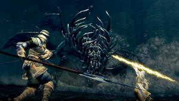

Transport Fever 2!
CS!
BeamNG!
Dark Souls Wiki has the best information on weapons, armor, classes, items, locations, secrets, gestures,
walkthroughs, and maps. Find out everything you need to know about the game
Dark Souls Remastered Wiki Guide - Everything About Dark Souls Remastered
Dark Souls Remastered Wiki Guide is a collection of guides and information on all of the features available in
the game. This includes detailed information on all Classes, Stats, Weapons, Magic, Armor, Builds, Gameplay and
Combat Mechanics, and more. This wiki serves as a community-based platform where fans and players can share
their experiences and personal tips, and contribute their own Builds for both new and seasoned players. All
information on this site is an open resource, editable, and modifiable by anyone in the community.

What is Dark Souls Remastered?
Dark Souls Remastered is a highly acclaimed Action Role-Playing game from FromSoftware, Inc., part of the
renowned Dark Soul Series. The game was released on May 24th, 2018, for the PlayStation 4, Xbox One, and PC,
with a subsequent release on Nintendo Switch on October 19th, 2018. Dark Souls Remastered features enhanced
graphics, improved performance, and quality-of-life updates compared to the original 2011 release. Dark Souls
Remastered includes the main game plus the Artorias of the Abyss DLC.
Dark Souls Remastered PC System Requirements
Recommended Requirements
- OS: Windows 10 64-bit
- Processor: Intel Core i5-4570 3.2 GHz / AMD FX-8350 4.2 GHz
- Memory: 8 GB RAM
- Graphics: GeForce GTX 660, 2 GB / Radeon HD 7870, 2 GB
- DirectX: Version 11
- Storage: 8 GB available space
- Sound Card: DirectX 11 sound device
- Additional Notes: High Settings, 60 FPS @ 1080p. Starting January 1st, 2024, the Steam Client will only support Windows 10 and later versions.
Minimum Requirements
- OS: Windows 7 64-bit, Service Pack 1
- Processor: Intel Core i5-2300 2.8 GHz / AMD FX-6300, 3.5 GHz
- Memory: 6 GB RAM
- Graphics: GeForce GTX 460, 1 GB / Radeon HD 6870, 1 GB
- DirectX: Version 11
- Storage: 8 GB available space
- Sound Card: DirectX 11 sound device
- Additional Notes: High Settings, 60 FPS @ 1080p. Starting January 1st, 2024, the Steam Client will only support Windows 10 and later versions.